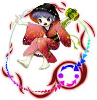

- Welcome to Touhou Wiki!
- Please register to edit. For assistance, check in with our Discord server or IRC channel.
Shinmyoumaru Sukuna
Shinmyoumaru Sukuna sɯ̥kɯna ɕʲimmʲoːmaɽɯ | |
|---|---|
|
Shinmyoumaru Sukuna in Antinomy of Common Flowers Descendent of the InchlingsMore Character Titles | |
| Species | |
| Abilities |
Using the Miracle Mallet |
| Occupation |
Princess |
| Location | |
Music Themes | |
| |
Appearances | |
| Official Games | |
| |
| Print Works | |
| |
Shinmyoumaru Sukuna (少名 針妙丸 Sukuna Shinmyoumaru) is the main antagonist of Double Dealing Character. She's a inchling living in the Shining Needle Castle.
General Information[edit]
Shinmyoumaru first appeared as the Final Boss of Double Dealing Character, she also appeared in Impossible Spell Card as an 8th Day Boss and later in Urban Legend in Limbo as a playable character.
Shinmyoumaru is a young inchling, currently residing in the Shining Needle Castle. Prior to the events of Double Dealing Character, she was ignorant to the existence of the Miracle Mallet. During the game's story, she uses it to make herself bigger, enlarging her size to that of a small human child.
Personality[edit]
Shinmyoumaru acts and speaks as if she was a young child. Along the same lines, she appears easily persuaded, as she readily accepted the fabricated history of the inchlings that Seija Kijin fed to her. Also, she has a height complex and will always seek ways to become taller, like with the Miracle Mallet or the Occult Balls.
Abilities and Possessions[edit]
- Ability to use the Miracle Mallet
The Miracle Mallet is an ancient inchling artifact, passed down through the generations, said to be able to grant any wish the user wishes. However, only inchlings are able to use it. In addition, the utilization of the Mallet to grant wishes comes with a price, and for wishes that are too large, it extracts this price before it even grants the wish.
In Double Dealing Character, Shinmyoumaru tried alongside with Seija to overturn society with the power of the Miracle Mallet, but the price she had to pay appears to have been the leakage of a lot of magical energy into Gensokyo. This magical energy was responsible for turning normally peaceful youkai into aggressive monsters, and creating tsukumogami such as Benben, Yatsuhashi, and Raiko. It caused Reimu's purification rod, Marisa's Mini-Hakkero, and a few knives belonging to Sakuya to start "acting" strangely. However, in Sakuya A's route, Shinmyoumaru says that the maid's knife is something she made into a tsukumogami as an experiment, so it's unknown whether or not all the heroines' weapons were the same, or if all of the tsukumogami were her experiments, or if Sakuya's knife was an exception.
- Shining Needle Sword
Whilst appearing as more of an accessory in Double Dealing Character, in Urban Legend in Limbo, Shinmyoumaru makes heavy use of the Shining Needle Sword in combat. Although appearing to be just an oversized needle, it seems to function very well as a weapon on its own. It seems to be able to produce beams and fishhooks made of energy, and she even uses it in a similar manner to a fishing rod in some moves and spellcards.
Occupation[edit]
She was a co-conspirator to Seija, and plotted to overturn the hierarchy of society with her. After exhausting the power of the Miracle Mallet in Double Dealing Character, she began living in a cage-like doll house at the Hakurei Shrine whilst her body remained tiny and she was waiting for the Miracle Mallet to recover all of its power. She planned to return to being "tall" afterwards. As of Urban Legend in Limbo, she is once again normal-sized (albeit very short) and presumably living at the Shining Needle Castle once more.
Backstory[edit]
Shinmyoumaru is a descendant of Issun-Boushi, a legendary oni-slayer who managed to obtain from them a treasure called the Miracle Mallet. At first, he only used its wish-granting power to make himself bigger and to get himself a princess. He thought that since the Miracle Mallet was an oni's tool, using it recklessly would cause his own ruin.
Several generations later, this particular mindset was all but gone in the minds of most inchlings. One of his descendants decided to use it again in order to live in luxury, thus breaking the taboo. However, the descendant wished for a grand castle and to rule over the inchling people. In that moment, the Shining Needle Castle appeared, and the Mallet's power ran out. Shortly after, the price of using the Mallet's power manifested itself: the entire castle turned upside-down, and they presumably descended into Gensokyo afterwards and joined the oni, also leading to the eventual forgetting of the inchlings by those living in the outside world. Afterwards, the Mallet was never spoken of again.
Before the main events of Double Dealing Character, Shinmyoumaru was a normal inchling living in the Shining Needle Palace, unaware as to the history of the inchling race, as well as to the Miracle Mallet. However, Seija Kijin eventually approached her with the Mallet she had found, and asked her to use it. By falsifying the history of the inchlings and placing the blame for the race's destruction on powerful youkai, Seija was able to convince her to rally to her side, and to use the Mallet for what is ultimately Seija's own ambition.
Character Design[edit]
Origin[edit]
| Attention: This section is a stub and it needs expanding with more information related to the section's topic. If you can add to it in any way, please do so. |
Name[edit]
Her full name is Shinmyoumaru Sukuna (少名 針妙丸). Her surname Sukuna (少名) literally means "name/fame with a little volume". The meaning of the kanji "少" or word "sukunai" is "a little," or "with a little volume", but it originally meant "young" in ancient times. So "Sukuna" can be interpreted as "young" or "tiny likely in young age". This name is borrowed from "Sukunabikona" (少名毘古那, 少彦名) or its other honorific name "Sukuna mi-kami" (少名御神), the small god who created and ordered the land of Izumo with Ookuninushi in Japanese mythology.
Her given name Shinmyoumaru (針妙丸) can be roughly translated as "Needle Strange Ball." "Shin," or "needle," is what her character model, Issun-boushi, used for oni's termination. "Myou" means "strange/unnatural", but in the ancient era "elegant/moderate/vague." The kanji of "Shimyou" is ZUN's original spelling, but it can also be written "神妙", meaning "mysterious/very serious." The "-maru" in her name is a suffix for boys in the medieval era. This therefore could interpret her given name as "mysterious boy with a needle".
Design[edit]
In Double Dealing Character's official art Shinmyoumaru has short lavender hair, and eyes that appear to be lavender with brown flecks. She wears a pink Kimono with a pinstripe pattern, some flowers, and a black Obi. She has a black bowl covering her head with a flower-patterned border. In her left hand she carries the Miracle Mallet, and in her right hand, a sewing needle that shines, hence the name "Shining Needle Sword". The bowl, mallet and needle are the iconic possessions of Issun-boushi, and her design is largely based on him. The Miracle Mallet's power forms a circle around her, representing how the mallet takes payment equivalent to the wishes it grants. She doesn't wear any kind of footwear. She appears to be the size of a small child in-game. This is due to the Miracle Mallet's power, however. In several endings, she is shown to be only a few inches tall once its power wears off.
In Urban Legend in Limbo, Shinmyoumaru's eyes are now red. She replaces her bowl hat with a larger, flatter, unpatterned saucer, and now uses a similar bowl as a vehicle. The magical circle around her is no longer present. This same appearance would later carry over to Antinomy of Common Flowers.
Story[edit]
Games[edit]
- Double Dealing Character
- Main article: Reimu A Arc
Shinmyoumaru believes that Reimu is one of her allies as her purification rod has some of her miracle mallet's power and tells Reimu about how her purification rod is not happy with her. She asks Reimu to help her overthrow society, but Reimu refuses and fights her.
- Main article: Reimu B Arc
Reimu came to stop Shinmyoumaru from overthrowing society. She tells Reimu that she is causing the social upheaval because the inchlings have been ignored.
- Main articles: Marisa A Arc and Marisa B Arc
Shinmyoumaru asks Marisa if she is there to help her "turn the world upside-down", and that her heart longs for power. Marisa is only there to stop her, though, so the two do battle.
- Main article: Sakuya A Arc
When Sakuya arrives, she realizes that her knife is something that she had experimentally turned into a tsukumogami. She is awash with joy at Sakuya's kind-heartedness, but the two are ultimately on opposite sides, so Shinmyoumaru begins the battle.
- Main article: Sakuya B Arc
Like in the Sakuya A arc, Shinmyoumaru misunderstands the maid's intentions and is extremely happy a human would support her. Again, Sakuya is a member of the "ruling class", so the two fight each other.
- Impossible Spell Card
- Main article: Impossible Spell Card: Story
Later on when Seija has strong humans and youkai trying to capture her thank to the tengu's newspaper, Shinmyoumaru confronts her and declares that she should return the remainder of the Mallet's magic and that they've lost the war. Seija believing that using her cheaty magic to concur Gensokyo, Shinmyoumaru states that they ought to surrender because she has had enough. Since Seija goes against her will, she goes against Seija and gets others to capture her, becoming one of the many to try and stop Seija. She uses spell cards that are considered impossible to dodge.
Relationships[edit]
Seija Kijin[edit]
Seija Kijin initially comes to Shinmyoumaru to give her the Miracle Mallet and convince her to overturn society with her. They were allies during Double Dealing Character, but while Shinmyoumaru gave up in overturning society after her defeat, Seija kept following her plans and "stole" some of the Miracle Mallet's power, using it during Impossible Spell Card. Since Shinmyoumaru wanted her power back, she went out hunting the amanojaku together with many others humans and youkai.
Reimu Hakurei[edit]
After Shinmyoumaru was defeated, she reverted to her original one-inch size. Reimu realized that Shinmyoumaru could face harm in this state, and provided her with a small cage for her to lodge in whilst the mallet was recharging. She eventually returned to her castle, but it seems she is a regular lodger at the shrine, and the two get along well.
Minor Relationships[edit]
The two tsukumogami are also in on the conspiracy, but it's unknown if they know each other at all.
Okina helped Shinmyoumaru with her plans to hijack the fireworks festival in The Grimoire of Usami.
Gallery[edit]
Cover of Double Dealing Character, featuring Shinmyoumaru's silhouette
Shinmyomaru art from Urban Legend in Limbo
Skills[edit]
| Name | Translated | Comments | Games | Usage | ||
|---|---|---|---|---|---|---|
| Total: 7 | ||||||
| 天衣百縫 | Heavenly Veil's Hundred Stitches | ULiL AoCF |
5C 5C | |||
| 絵羽縫直し | Kimono Pattern Resewing | ULiL AoCF |
6C 6C at middle of screen | |||
| 親椀フーピング | Rice Bowl Hooping | ULiL AoCF |
4C 4C | |||
| 海老一大回転 | Ebiichi Giant Rotation | ULiL AoCF |
8C 8C | |||
| 小人の一本釣り | Inchling's Pole Fishing | ULiL AoCF |
2C 2C | |||
| 緑の小人さんが転んだ | The Green Inchlings Tumbled Over | Aided by Occult Ball | ULiL AoCF |
A+B with Occult Ball A+B with Occult gauge | ||
| 小槌大回転 | Giant Mallet Swing | AoCF | 6C at top or bottom of screen | |||
Spell Cards[edit]
| Name | Translated | Comments | Games | Stage | ||
|---|---|---|---|---|---|---|
| Total: 27 | ||||||
| 小弾「小人の道」 | Small Bullet "Inchling's Path" | DDC | St. 6: E/N | |||
| 小弾「小人の茨道」 | Small Bullet "Inchling's Thorny Path" | DDC | St. 6: H/L | |||
| 小槌「大きくなあれ」 | Mallet "Grow Bigger!" | DDC | St. 6: E/N | |||
| 小槌「もっと大きくなあれ」 | Mallet "Grow Even Bigger!" | DDC | St. 6: H/L | |||
| 妖剣「輝針剣」 | Bewitched Sword "Shining Needle Sword" | DDC | St. 6: E/N/H/L | |||
| 小槌「お前が大きくなあれ」 | Mallet "You Grow Bigger!" | DDC | St. 6: E/N/H/L | |||
| 「進撃の小人」 | "Attack on Dwarf" | DDC | St. 6: E/N | |||
| 「ウォールオブイッスン」 | "Wall of Issun" | DDC | St. 6: H/L | |||
| 「ホップオマイサムセブン」 | "Hop-o'-My-Thumb Seven" | DDC | St. 6: E/N | |||
| 「七人の一寸法師」 | "The Seven Issun-Boushis" | DDC | St. 6: H/L | |||
| 「小人の地獄」 | "Inchlings' Hell" | ISC | St. 8 | |||
| 輝針「鬼ごろし両目突きの針」 | Shining Needle "Oni-Slaying, Eye-Stabbing Needle" | ISC | St. 8 | |||
| 小槌「伝説の椀飯振舞」 | Mallet "Lavish Banquet of Legend" | ULiL AoCF |
Use Use | |||
| 小人「一寸法師にも五分の魂」 | Inchling "One-Inch Samurai with a Half-Inch Soul" | ULiL AoCF |
Use Use | |||
| 釣符「可愛い太公望」 | Fishing Sign "Adorable Tai Gong Wang" | ULiL AoCF |
Use Use | |||
| ＊緑の巨人よ、おおきくなれよ！＊ | *Grow Bigger, Oh Green Giant!* | ULiL AoCF |
Use-LW Use-LW | |||
| 大漁「空中大回転漁法」 | Big Catch "Midair Giant Rotation Fishing Method" | ULiL | Story | |||
| ＊幻の国ブレフスキュ＊ | *Country of Illusion, Blefuscu* | ULiL | Story | |||
| 槌化符「大判小判弾幕変化」 | Mallet Transform Sign "Wild Riches Danmaku Transformation" | Co-owner with Mamizou | AoCF | Story | ||
| 昇槌符「僕らの夢を載せて大きくなあれ」 | Rising Mallet Sign "Carry Our Dreams and Grow Bigger!" | Co-owner with Tenshi | AoCF | Story | ||
| 墜槌符「夢は大気圏に落ちて大きくなあれ」 | Plummeting Mallet Sign "Dreams Fall Through the Atmosphere and Grow Bigger!" | Co-owner with Tenshi | AoCF | Story | ||
| 「全小人族の緋想天」 | "Sky of Scarlet Perception of All Inchlings" | Co-owner with Tenshi | AoCF | Story (Overdrive) | ||
| 狂槌符「狂視幻像（ディスオーダーアイ）も大きくなあれ」 | Mad Mallet Sign " |
Co-owner with Reisen | AoCF | Story | ||
| 槌恋符「大判小判ザックザクハート」 | Mallet Love Sign "Rolling-in-Riches Heart" | Co-owner with Koishi | AoCF | Story | ||
| 槌礫符「大判小判ザックザクサイコキネシス」 | Mallet Rubble Sign "Rolling-in-Riches Psychokinesis" | Co-owner with Sumireko | AoCF | Story | ||
| 緋針符「要石も大きくなあれ」 | Scarlet Needle Sign "Keystones Grow Bigger, Too!" | Co-owner with Tenshi | VD | Nightmare Tuesday - 2 | ||
| 輝夜符「蓬莱の大きな弾の枝」 | Shining Night Sign "Big Bullet Branch of Hourai" | Co-owner with Kaguya | VD | Nightmare Tuesday - 4 | ||
| 永輝符「大きくなる壺」 [1] | Eternal Shining Sign "Pot Growing Bigger" | Co-owner with Eirin | VD | Nightmare Tuesday - 5 | ||
Additional Information[edit]
- The silhouette of Shinmyoumaru occupies the front of Double Dealing Character's jewel case.
Fandom[edit]
Official Profiles[edit]
|  | ○６面ボス 小人の末裔 少名 針妙丸（すくな しんみょうまる） 種族：小人 一寸法師の末裔である。 初代一寸法師は鬼を退治して、鬼の秘宝『打ち出の小槌』を手に入れた。 打ち出の小槌は鬼の道具で有り、それが起こす奇跡もまた、鬼の魔力である。
何でも願いを叶えるという打ち出の小槌を使えるというのに、使ってはいけないとは何事だ。 「豪華な城を建てて民を支配したい」 刹那、輝針城と名付けられた城が出現し、打ち出の小槌の魔力は尽きた。 輝針城は逆転し、小人族もろとも鬼の世界に幽閉されてしまったのだ。 打ち出の小槌は鬼の道具である。 その事を小人族は思い知った。
そこに目を付けたのが天邪鬼 正邪だった。 彼女は自身の野望を満たすために、打ち出の小槌を利用する事を考えた。 小人族の屈辱、打ち出の小槌の強大な力、そして屈辱を与えた幻想郷の妖怪達。
|
Stage 6 Boss - Descendant of the Inchlings Sukuna Shinmyoumaru Species: Inchling A descendant of Issun-Boushi. Her ancestor Issun-Boushi exterminated an oni, and obtained the oni's treasure, the "Miracle Mallet". The Miracle Mallet was an oni's tool, and the miracles it caused were also a result of the oni's power.
The Miracle Mallet can grant any wish imaginable-- so why aren't we using it? "I want to build a luxurious castle, and rule over the people!" In a flash, a castle called the "Shining Needle Castle" appeared, as the Miracle Mallet's power ran out. The Shining Needle Castle turned on its head, and was confined to the world of the oni, taking the entire inchling race with it. The Miracle Mallet was an oni's tool. The inchlings realized this,
An amanojaku, Seija, then laid eyes upon her. A humiliation suffered by the inchlings, the power of the Miracle Mallet, and the youkai of Gensokyo who were responsible for that humiliation--
|
Official Sources[edit]
- 2013/08/12 Double Dealing Character - omake.txt (official profile), Stage 6 dialogue, various endings
| This page is part of Project Characters, a Touhou Wiki project that aims to write proper descriptions for all official characters of Touhou Project. Please keep the character page guidelines in mind when contributing. |
- ↑ Incorrectly displayed in-game as 妖風符「土着蝶ストーム」(which is Yuyuko and Kanako's card from a previous scene). True name was later revealed in SCoOW Volume 7.